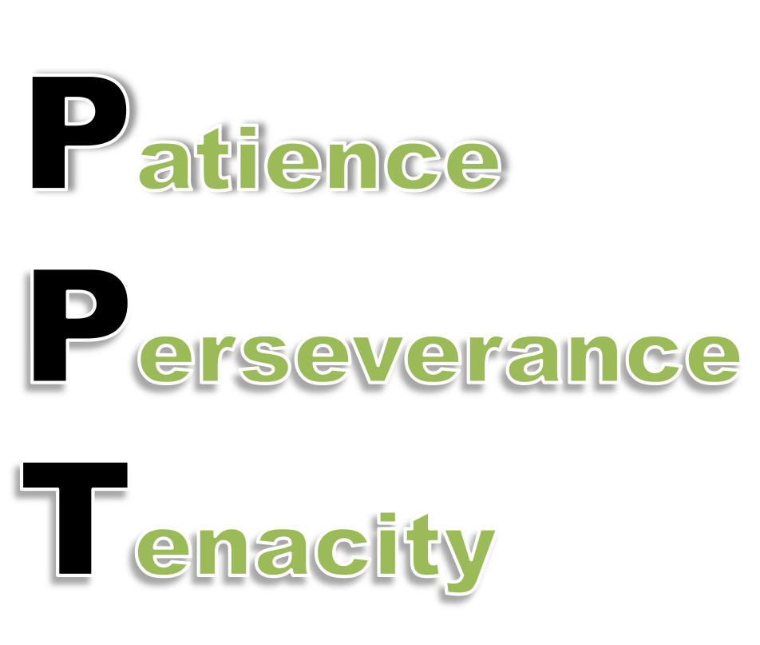

COASSF#50 - Key To Startup Success_Reflection from S353
In my last post on this subject, I compared some similarities and differences between S353 (Entrepreneurship: Formation of New Business) and G566 (Real-Life Ethics), two of my favorite GSB courses. Today's S353 class presented the last case in this series of 18 very different and interesting startup stories. So after all the discussions, what kind of lessons can we draw from them?
Before George and Jim give us a summary on Thursday, I just want to share my own takeaways. I call them "PPT".

I find these three qualities are not only exemplified throughout all the 18 S353 cases we have reviewed, but also demonstrated in all the startup success stories that I personally know of, whether in US, Europe or China. There are many other situational factors or circumstantial strategies that were also instrumental to the success for those founders, but in the grand scheme of all things those more "operational" factors tend to wash out and become no more than a white noise in the distribution of a seemingly random walk. What stand out in the end as the true significant drivers and the common denominators of all, are Patience, Perseverance, and Tenacity.
It's worth noting that Passion is not part of this by my account, which might surprise some people. I think passion is definitely and obviously a common attribute to many successful founders, and the value of passion is that it brings tenacity. Many people have enough passion, but if that cannot be translated into PPT, the venture would still fail. On the contrary, we've seen enough successful founders in S353 that don't appear to have built their businesses with a particular passion for the product/service/business model, but they got sufficient PPT to live through the peaks and valleys and that's what gives their stories to an eventual happy ending.